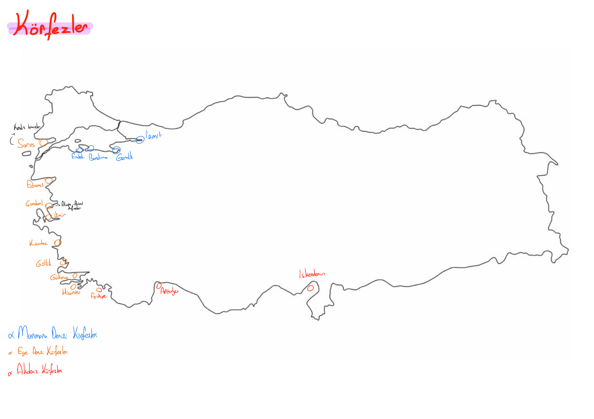

Orijinal Not Haritası

Marmara Denizi
Sanayi ve nüfus yoğunluğuna bağlı olarak kirlilik oranının en yüksek olduğu iç denizimizdir.
Yoğun sanayi, tersaneler ve limanlar sebebiyle su sirkülasyonu zayıf ve kirlilik aşırıdır.
Zeytinlikler ve turizm ile çevrili olup Güney Marmara'nın önemli liman çıkışlarındandır.
Erdek Körfezi turistik açıdan gelişmiştir; Bandırma ise sanayi ve gübre fabrikaları barındırır.
Ege Denizi
Dağların kıyıya dik uzanması (enine kıyı) nedeniyle en fazla koy, körfez ve doğal limana sahip denizimizdir.
Akdeniz kıyıları
Dağların kıyıya paralel uzanması (boyuna kıyı) nedeniyle koy ve körfez sayısı Ege'ye göre çok daha azdır.
Akdeniz'in en kirli körfezidir. Demir-çelik fabrikası, petrol boru hatları çıkışı ve sanayi limanı barındırır.
Türkiye'nin turizm potansiyeli en yüksek körfezidir. Suyu berrak, kirlilik oranı son derece düşüktür.
Tekne turları ve doğasıyla meşhur, dağların denizle birleştiği muazzam karstik-tektonik sığınak.
Karadeniz'de Neden Körfez Yoktur? (Çok Kritik Soru!)
Karadeniz kıyılarında Sinop Yarımadası dışında neredeyse hiç koy ve körfez bulunmaz.
Gerekçesi: Dağların kıyıya paralel ve çok dik yükselmesi (Boyuna kıyı tipi) ve kıyı çizgisinin dümdüz uzanmasıdır. Akarsular getirdikleri alüvyonlarla kıyı girintilerini hızla doldurmuştur. Dolayısıyla bu durum tamamen Göreceli Konum / Yer Şekilleri ile ilgilidir.